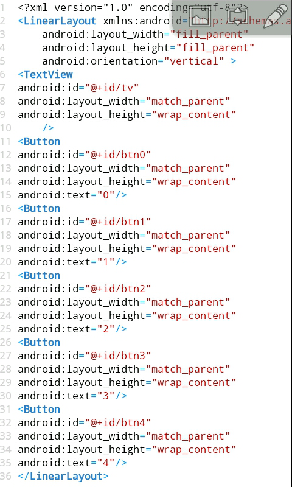
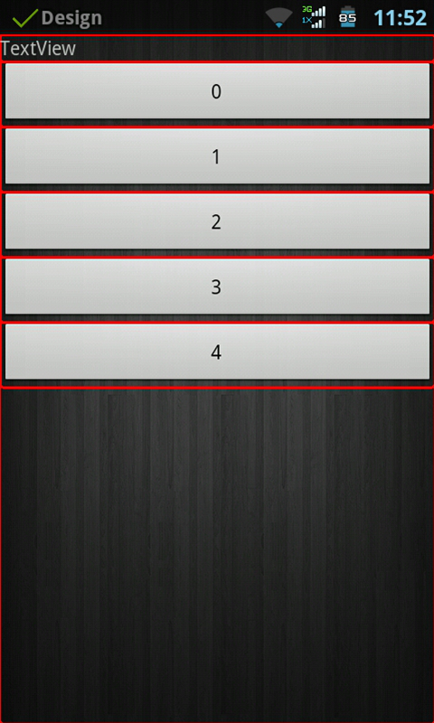
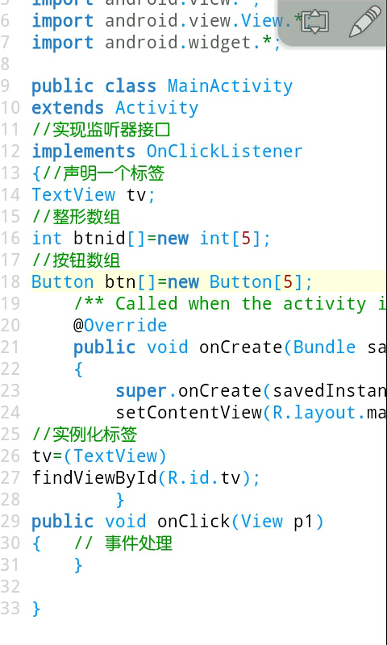
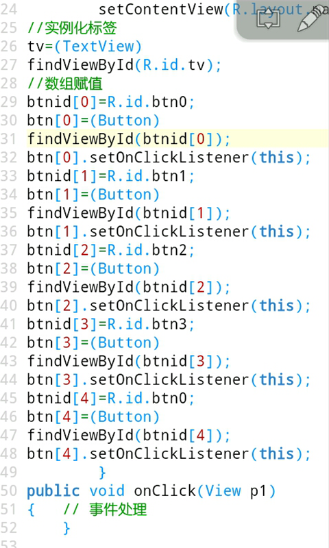
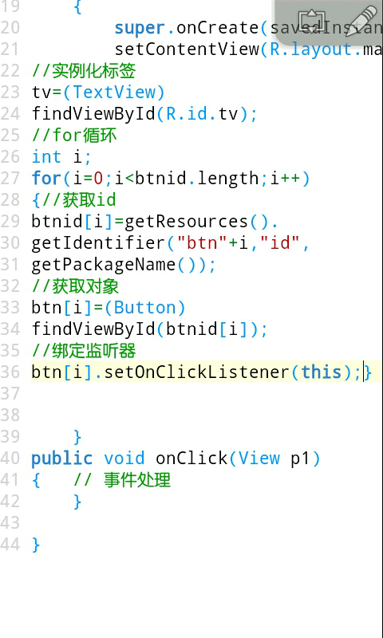
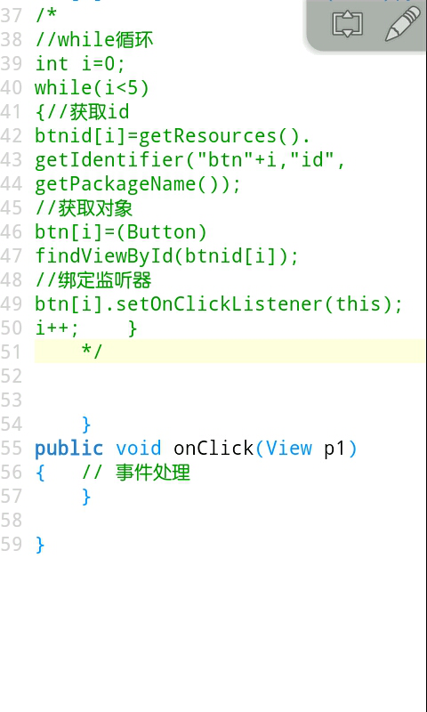
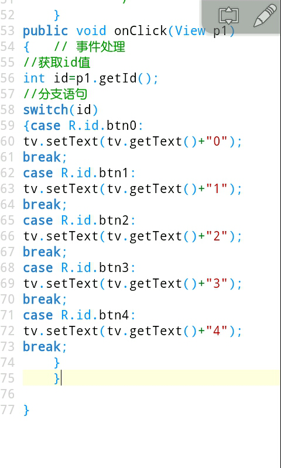
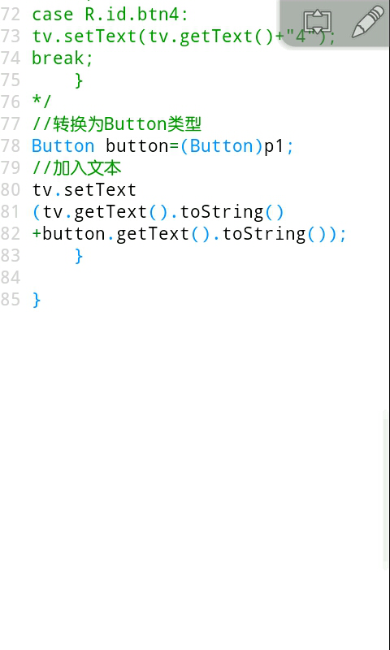
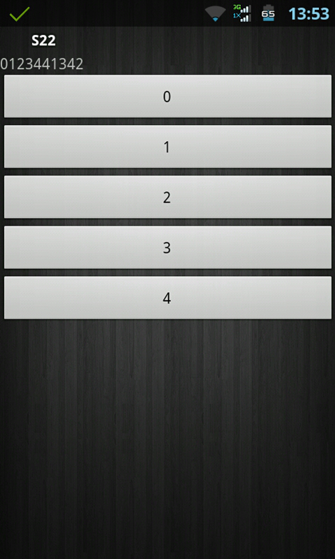

数组,for循环,while循环,switch循环(22课)
这节课介绍的内容有点多，我们用一个小例子进行讲解。一个标签，然后5个按钮0到4，点击按钮，让标签加入文本。
我们打开我们的布局文件，使用线性布局，方向为垂直排列，定义一个标签，添加一个id，再定义5个按钮，内容为0到4，并且为每个按钮添加一个id。写一个其它用复制粘贴稍微修改下就可以。

我们的程序运行效果。

我们再打开我们的java代码，先写上监听器吧，然后声明一个标签对象，找到对象。这里先讲数组， int btnid[]=new int[5];这样就生成了一个整形数组。 格式: 类型 数组名称[]=new 类型[数组长度] 任何类型的都可以生成数组，我们再声明一个Button类型的数组。如果需要引用就:数组名称[数组元素]。任何类型都是可以生成数组的。

然后我们对btnid数组进行赋值，让它等于每个按钮的id，java是从零开始的，所以第一个元素是btnid[0]，数组的长度是5，所以最大的元素是4，然后按钮数组实例化进行绑定监听器。

上面的代码是不是很多，光复制粘贴就要好多遍，接下来我们介绍for循环， for(初始条件;循环条件;运算){代码块} for循环相当于计次循环，注意括号里面是用分号间隔，我们让初始条件i=0;循环条件i<5，btnid.length是得到长度，也就是5，i++自加就相当于i=i+1的缩写，让i的值每次增加1，然后在i小于5的条件下执行大括号里面的内容，当i为0然后执行一遍大括号里面的内容，然后i增加1，一直到i的值为4时执行一遍大括号里面的内容，这是i的值就是5了，不满足i<5的条件就不再执行了。我们在大括号里面可以引用i的值， getResources(). getIdentifier("btn"+i,"id", getPackageName())是得到id值，里面三个参数，第一个是资源名称，第2个是资源类型，第3个参数是包名。getPackageName() 方法是获取包名，然后实例化按钮，绑定监听器，这样我们用较少的代码就实现了上面的代码。

接下来我们再介绍一下while循环，while循环的表现形式为 while(条件){代码块}当小括号里面的条件成立时就一直执行大括号里面的内容，上面的for循环我们也可以用while循环表示出来，还有另外一种表现形式do{代码块}while(条件)，do...while的区别就是先执行大括号里面的代码块再进行判断。while循环和for循环随便写哪个都可以，这里将while循环注释掉了。

接下来我们介绍一下switch分支语句，表现形式为 switch(条件) {case 条件1:代码块1;break; case 条件2:代码块2;break; .... default:代码块;} 条件为一个数值变量，case进行匹配，当匹配到某个条件成立时候就执行该 条件的代码块，break是用来条件成立时候不再执行下面的内容，也可用来循环里面打破循环。default是默认执行内容，上面的条件都不满足时候执行。也可以用if来代替。不过分支语句更加有条理性。

上面的内容是不是依旧很多，我们将它注释掉，根据传递进来的View类型参数我们向下转型为Button类型，这样代码更加简化。

最后运行我们的项目看看效果。
